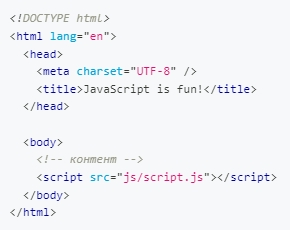
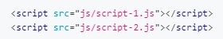

Підключення JS до проекту
- Створіть в папці проекту файл з розширенням .js
- Потім вкажіть шлях до файлу скрипту в атрибуті src тегу script. 
Щоб підключити JavaScript із зовнішнього файлу:
Підключення декілька скриптів
Підключаючи декілька JavaScript-файлів до сторінки, інтерпретатор обробляє їх у тому порядку, в якому вони зазначені в HTML-файлі.
Отримання типу значення змінної
Оператор typeof
const quantity = 17;
console.log(typeof quantity); // "number"
Суворий режим
Для того, щоб перевести скрипт в суворий режим, достатньо зазначити директиву на початку js-файлу. Завжди пишіть код в суворому режимі.
В файлі script.js прописуємо
"use strict";
Методи часто використовувані
Знайти кіл-ть символів рядка
.length
"JavaScript is awesome".length;
Зробить усі літери великими
.toUpperCase()
"JavaScript is awesome".toUpperCase();
Зробить усі літери малими
.toLowerCase()
"JavaScript is awesome".toLowerCase();